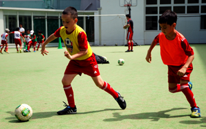
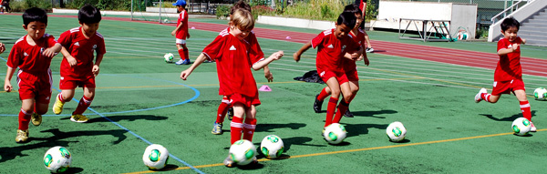

|
Regardless of prior experience, our "Lions" classes, for 7 to 8 year-olds, are geared towards developing and improving close ball control, game awareness and team camaraderie. FA inspired games, activities and drills are incorporated into every class to provide each Lion with a challenging and rewarding program.
The course aims to facilitate and enhance the progress of individual players throughout this key stage in their development. Specifically, Lions classes focus on the improvement of passing, shooting and dribbling skills, whilst promoting all-round fitness, and basic tactical awareness.
BFA's aim is to inspire self-confidence, instill a sense of sportsmanship and provide each Lion with a feeling of belonging to the pride. The environment Lions play and learn in will not only foster their football skills, but will also serve to strengthen communication skills and heighten international understanding.
Upon graduation each Lion will be fully equipped with the technical ability and knowledge to tackle the challenges of The Academy. 
|
|